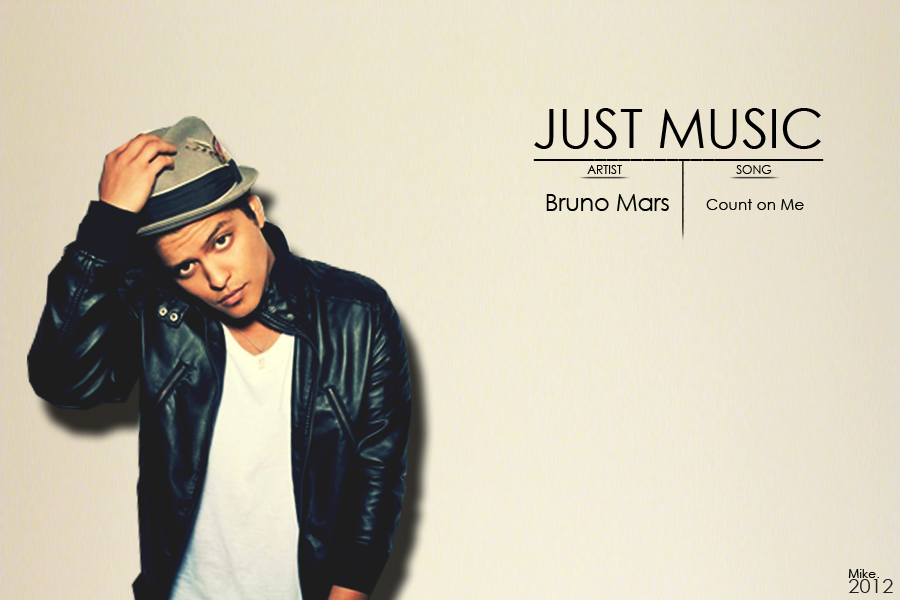
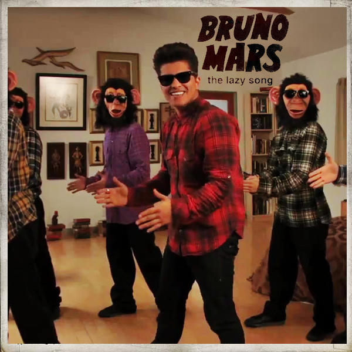
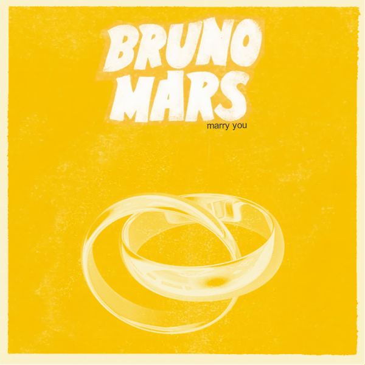

Peter Gene Hernandez (born October 8, 1985), known professionally as Bruno Mars (/ˈmɑːrz/), is an American singer-songwriter, multi-instrumentalist, record producer, and choreographer. Born and raised in Honolulu, Hawaii, by a family of musicians, Mars began making music at a young age and performed in various musical venues in his hometown throughout his childhood. He graduated from high school and moved to Los Angeles to pursue a musical career. After being dropped by Motown Records, Mars signed a recording contract with Atlantic Records in 2009.
Mars has received many awards and nominations, including four Grammy Awards, and was named one of Time's 100 most influential people in the world in 2011. In December 2013, he ranked number one on the Forbes 30 under 30 list. Mars is known for his stage performances and retro showmanship. He is accompanied by his band, The Hooligans, who play a variety of instruments such as electric guitar, bass, piano, keyboards, drums and horns, and also serve as backup singers and dancers. Mars performs in a wide range of musical styles.

Oh uh-huh
If you ever find yourself stuck in the middle of the sea
I'll sail the world to find you
If you ever find yourself lost in the dark and you can't see
I'll be the light to guide you
We find out what we're made of
When we are called to help our friends in need
You can count on me like 1, 2, 3
I'll be there
And I know when I need it
I can count on you like 4, 3, 2
You'll be there
'Cause that's what friends are supposed to do, oh yeah
Oh, oh yeah, yeah
If you're tossin' and you're turnin'
And you just can't fall asleep
I'll sing a song beside you
And if you ever forget how much you really mean to me
Every day I will remind you
We find out what we're made of
When we are called to help our friends in need
You can count on me like 1, 2, 3
I'll be there
And I know when I need it
I can count on you like 4, 3, 2
You'll be there
'Cause that's what friends are supposed to do, oh yeah
Oh, oh yeah, yeah
You'll always have my shoulder when you cry
I'll never let go, never say goodbye
You know...
You can count on me like 1, 2, 3
I'll be there
And I know when I need it
I can count on you like 4, 3, 2
You'll be there
'Cause that's what friends are supposed to do, oh yeah
Oh, oh
You can count on me 'cause I can count on you

Today I don't feel like doing anything
I just wanna lay in my bed
Don't feel like picking up my phone
So leave a message at the tone
'Cause today I swear I'm not doing anything.
Uh
I'm gonna kick my feet up
Then stare at the fan
Turn the TV on, throw my hand in my pants
Nobody's gonna tell me I can't
I'll be lounging on the couch,
Just chillin' in my snuggie
Click to MTV, so they can teach me how to dougie
'Cause in my castle I'm the freaking man
Oh, yes I said it
I said it
I said it 'cause I can
Today I don't feel like doing anything
I just wanna lay in my bed
Don't feel like picking up my phone
So leave a message at the tone
'Cause today I swear I'm not doing anything
Nothing at all!
Ooh, hoo, ooh, hoo, ooh, ooh-ooh
Nothing at all
Ooh, hoo, ooh, hoo, ooh, ooh-ooh
Tomorrow I'll wake up, do some P90X
Meet a really nice girl, have some really nice sex
And she's gonna scream out: 'This is Great' (Oh my God, this is great!)
Yeah
I might mess around, and get my college degree
I bet my old man will be so proud of me
But sorry pops, you'll just have to wait
Haha
Oh, yes I said it
I said it
I said it 'cause I can
Today I don't feel like doing anything
I just wanna lay in my bed
Don't feel like picking up my phone
So leave a message at the tone
'Cause today I swear I'm not doing anything
No, I ain't gonna comb my hair
'Cause I ain't going anywhere
No, no, no, no, no, no, no, no, no
I'll just strut in my birthday suit
And let everything hang loose
Yeah, yeah, yeah, yeah, yeah, yeah, yeah, yeah, yeah, yeah
Ooh
Today I don't feel like doing anything
I just wanna lay in my bed
Don't feel like picking up my phone
So leave a message at the tone
'Cause today I swear I'm not doing anything
Nothing at all
Ooh, hoo, ooh, hoo, ooh, ooh-ooh
Nothing at all
Ooh, hoo, ooh, hoo, ooh, ooh-ooh
Nothing at all

It's a beautiful night,
We're looking for something dumb to do.
Hey baby,
I think I wanna marry you.
Is it the look in your eyes,
Or is it this dancing juice?
Who cares baby,
I think I wanna marry you.
Well I know this little chapel on the boulevard we can go oh oh oh,
No one will know oh oh oh,
Oh, come on, girl.
Who cares if we're trashed got a pocket full of cash we can blow oh oh oh,
Shots of patron,
And it's on, girl.
Don't say no, no, no, no-no;
Just say yeah, yeah, yeah, yeah-yeah;
And we'll go, go, go, go-go.
If you're ready, like I'm ready.
Cause it's a beautiful night,
We're looking for something dumb to do.
Hey baby,
I think I wanna marry you.
Is it the look in your eyes,
Or is it this dancing juice?
Who cares baby,
I think I wanna marry you.
I'll go get a ring let the choir bells sing like oooh,
So what you wanna do?
Let's just run girl.
If we wake up and you wanna break up that's cool.
No, I won't blame you;
It was fun, girl.
Don't say no, no, no, no-no;
Just say yeah, yeah, yeah, yeah-yeah;
And we'll go, go, go, go-go.
If you're ready, like I'm ready.
Cause it's a beautiful night,
We're looking for something dumb to do.
Hey baby,
I think I wanna marry you.
Is it the look in your eyes,
Or is it this dancing juice?
Who cares baby,
I think I wanna marry you.
Just say I doooooo-ooo uhu,
Tell me right now baby,
Tell me right now baby, baby.
Oh, it's a beautiful night,
We're looking for something dumb to do.
Hey baby,
I think I wanna marry you.
Is it the look in your eyes,
Or is it this dancing juice?
Who cares baby,
I think I wanna marry you.